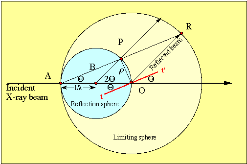
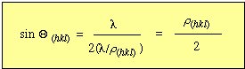
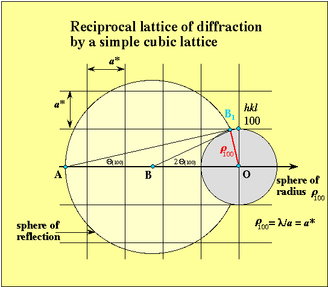

Reading:
Güven, N. (1990) Electron diffraction of clay mineral. In Electron-Optical methods in clay science Vol. 2, (ed. I. D. R. Mackinnon and F. A. Mumpton), The Clay Minerals Society, Boulder, CO.,
Klug and Alexander (1974) pages 38-41, 132-135.
When a beam is diffracted by a crystal structure, the locations of the diffracted beam provide a map of the reciprocal lattice of the crystal. This can be shown by starting with a rearrangement of Bragg's Law:
The reciprocal lattice is initially a difficult concept to comprehend from a physical standpoint, because it is an imaginary construct used for the convenience of crystallography (the units are in inverse-Å or Å-1). Recall that real space lattices are defined by translations about the crystallographic axes a, b and c and their respective inter axial angles α, β, and γ. It is possible to construct an imaginary lattice that has points hkl defined by vectors perpendicular to the real lattice planes (hkl). The point hkl in the reciprocal lattice lies normal to the origin of the (hkl) plane at a distance ρ from the origin, where
and k is constant (we can take value of k to be unity for the moment).
Perhaps it is best to show this graphically using the figure below.

A triangle inscribed in :
If we let k2 = λ,
then
d(hkl) = λ / ρ(hkl)
By substitution in to Bragg's Law:

The particulars for the reciprocal lattice by a simple cubic lattice can be demostrated with the series of figures below.
Features to note in the first figure are:

The properties of a reciprocal lattice are such that : a*.a
= b*.b = c*.c = 1, and α*
+ α= 180°, β* + β=
180°
and
γ* + γ= 180° and ρ(hkl)
= λ/ d(hkl)
The sphere of reflection is also known as the "Ewald sphere", which
we will see next, its size is related to the wavelength of radiation.